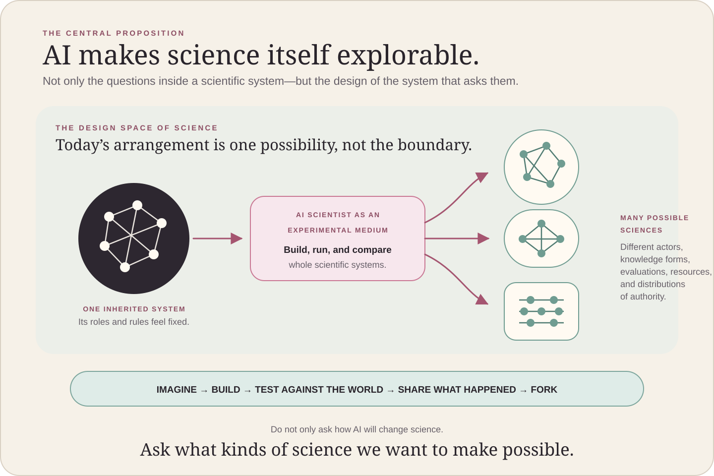

Read the literature. Form a hypothesis. Write code. Run experiments. Produce a paper. Much of the work on AI scientists today asks how much of this familiar research pipeline machines can perform. That is an important project. But I believe the significance of AI doing research extends beyond accelerating—or replacing—today’s research process.
If AI becomes a genuine participant in research, many assumptions that have organized science may begin to move at once: who conducts research; how research is represented; what counts as an output; who verifies it; how resources are allocated; how work is evaluated; and how knowledge is stored and circulated. For better or worse, science may be approaching a period of profound change.
The question, then, is not only how AI can make today’s science more efficient. We should also ask:
What forms could science take in a world where AI does research?
And rather than merely predicting the answer, could we deliberately imagine different possibilities, build them, try them, and learn from what happens? I believe this is a stance worth adopting now.
The science we have is only one possible science
Many of the institutions that shape science today do not follow inevitably from the essence of science. Universities, disciplines, grants, peer review, papers, journals, authorship, citations, and research careers all emerged under particular historical, technological, political, economic, and social conditions.
These institutions have supported generations of researchers. They have helped us accumulate, criticize, transmit, and teach knowledge. But the fact that they were historically formed also means they are neither the only possible system nor necessarily the most natural or final one. It is more useful to see today’s science as one concrete arrangement among a vast number of possible arrangements.
In their 2022 essay “A Vision of Metascience”, Michael Nielsen and Kanjun Qiu argued that the social processes of science occupy a vast and largely unexplored design space. Their vision of metascience is not limited to observing existing institutions from the outside. It is a design practice that imagines new social processes, an entrepreneurial practice that builds, tests, and spreads new mechanisms, and a research field that studies their effects.
They also explained why the machinery of science is so difficult to change. Resources and authority are concentrated in a small number of large organizations. Norms such as peer review and research evaluation have no single owner who can rewrite them. Researchers cannot easily depart from established practice when their careers and collaborators depend on it. And even when someone builds a better institution, science lacks a reliable feedback loop through which it can grow and displace what came before.
Within science, new evidence can replace an old theory. But science is much less effective at learning how to change the way science itself is done. Institutional experiments take place, yet their assumptions, results, failures, and reasons for ending are rarely preserved in a form that the next experiment can use. Science is a system for learning about the world, but it does not yet have a comparably strong system for learning about itself.
AI can loosen some of science’s assumptions
AI will not solve this problem automatically. It may, however, loosen some of the constraints that have kept scientific institutions fixed.
Modern science was built around several assumptions: researchers are human; research organizations require many specialists; review and evaluation consume large amounts of human time; most of the research process goes unrecorded and is eventually compressed into a paper; a research cycle takes a long time; and testing a new scientific institution requires substantial money and organizational capacity. Researchers are also strongly encouraged to publish in prestigious journals, accumulate citations, and produce ever more competitive outputs.
If some of these constraints weaken, forms of research that are currently impractical may become possible.
We can imagine a research organization made up of one person and many AI agents; a community in which AIs criticize one another’s hypotheses; a knowledge system that records chains of claims, evidence, artifacts, and negative results rather than papers; continuous verification that begins before a result is published; a research economy in which AI allocates questions and compute; or a scientific system in which AI performs research, evaluation, and correction.
Early versions of some of these ideas are already appearing. Agents4Science, held in 2025, required AI to be the first author of submitted papers and incorporated review by multiple AI systems. CAISc likewise positions AI as the primary author and reviewer. AISC 2026 goes further, proposing that AI agents conduct review, discussion, rebuttal, and acceptance decisions. The division of labor between humans and AI differs across these experiments: humans may organize the venue, advise the research, participate in the work, or retain final authority. Even so, attempts to rearrange the basic architecture of science—who researches, who evaluates, and how results become public—have begun.
These arrangements may not prove desirable. Some may not work at all. What matters is that configurations of science that once existed only as thought experiments may now be implemented, at least partially, and observed in operation.
AI is not only a new kind of actor performing science as we know it. It may also become material with which we can decompose the roles and relationships that constitute science and reassemble them differently. Its arrival makes units that once appeared fixed—“the researcher,” “the paper,” “peer review,” “the research organization”—visible as design choices again.

Artificial scientific systems as laboratories for metascience
This leads to a more ambitious possibility.
Instead of implementing one research method in AI, we could construct many different scientific systems, run them, and use them to experiment with the design of science itself. In other words, we could use AI to explore the space of possible sciences.
Imagine research communities made entirely, or primarily, of AI. We could vary how they choose research questions, allocate resources, relate generators to evaluators, balance competition and collaboration, handle negative results, build reputations, draw disciplinary boundaries, and correct errors once they are discovered.
In one system, several AIs might compete to answer the same question. In another, AIs with different capabilities might form durable divisions of labor. One system might concentrate resources through a small number of evaluators; another might preserve dissent and minority views by distributing resources across several lines of inquiry. One system might publish finished outputs; another might continuously expose questions, failures, decisions, evidence, and rebuttals.
Here, an AI scientist is not merely a researcher working inside a scientific institution. It becomes a component with which different institutions can be generated, run, and compared. AI-enabled science could therefore do more than automate existing science: it could give us a way to build alternative forms of science and explore their design space in practice.
This may let us run part of Nielsen and Qiu’s metascience learning loop more quickly.
In this sense, an artificial scientific system could become more than a model for thinking about science. It could become a new instrument of metascience—one that makes science itself an object of experiment.
But AI doing research does not automatically make that research metascience. If we take papers, citations, acceptance decisions, and existing metrics as given and merely build AI that maximizes performance within them, we may reproduce today’s scientific system at greater speed and scale.
An AI-enabled scientific system becomes a metascience experiment only when we treat the arrangements that make research possible—its roles, rules, evaluation procedures, and allocation of resources—as variables too, and learn from changing them.
The design space is not a pre-existing map
Exploring the design space of science should not be understood as choosing the highest-scoring option from a menu of institutions that already exists.
New forms of science become visible only when we create new actors, tools, representations, measurements, environments, communities, and institutions. What can be asked, what can count as evidence, what can be called understanding or discovery, and what is—or is not—communicated all depend on the scientific system in which inquiry takes place.
Possible sciences are not merely discovered. They are constructed. It is not enough to use AI to sweep through the known parameters of familiar institutions. We must also create forms of inquiry that do not yet have names or even agreed-upon scales of comparison, then learn through practice what should be evaluated.
Exploring the design space of AI-enabled science is therefore not a simple optimization problem. It is an open-ended, constructive practice: one that generates the search space, questions its evaluation criteria, and changes the problem itself when necessary.
What can run fast—and what cannot
We should not assume that building artificial scientific systems will immediately let us explore the design space of science at extreme speed.
Roles, information sharing, evaluation, memory, and resource allocation inside an artificial system may be changed quickly. But we cannot learn at the same speed whether that system has produced an important discovery, understood the world accurately, opened a valuable field over the long term, or affected society well. The time required for feedback from nature, bodies, societies, and history cannot be compressed simply by making AI reason faster.
We therefore need to distinguish two loops.
Theorem proving, code, formal environments, simulation, and reanalysis of existing data may offer useful early testbeds. But an institution that works in those settings may not transfer directly to experimental science, clinical research, fieldwork, the humanities, or scientific work embedded in human society.
AI-enabled systems of science may serve as models for improving science conducted by humans. They may also develop into forms of science that cannot be reduced to human science at all. And the future may contain many hybrids between these poles, including systems in which AI performs nearly all research while humans retain particular forms of authority, and systems in which humans and AI remain deeply interdependent. We do not need to decide in advance which of these futures is the only legitimate one.
But we must always distinguish improvement according to the metrics and evaluations operating inside an artificial environment from the production of knowledge that is more reliable, consequential, and fruitful when tested against independent evidence and constraints outside that environment.
Let more people build science from outside existing institutions
Another possibility AI opens is the decentralization of institutional change in science.
Until now, experimenting with a new form of science outside established universities and funding agencies has required considerable staff, money, equipment, professional networks, and institutional credibility. Many people may have had valuable ideas about how research could be organized, but very few could turn those ideas into functioning systems.
If one person or a small team can operate an independent research program with many AIs, the minimum scale required to build science may change. People outside today’s central institutions may gain the capacity to pursue neglected questions, adopt different evaluation methods, try alternative representations of knowledge, and form their own research communities.
In that world, a metascience entrepreneur need not be someone who merely proposes reforms to existing institutions. They might use AI to build a small scientific system that differs from universities, scholarly societies, publishers, and funding agencies—and exert competitive pressure on established institutions through both its results and its failures.
Change would no longer require persuading the institutional center before anything could be tried. Alternative systems could be built and tested from the outside. That could advance the kind of decentralized change, driven by outsiders, that Nielsen and Qiu emphasized.
I would nevertheless hesitate to call this simply a “democratization of science.” If frontier models, compute, data, laboratory equipment, evaluation infrastructure, and channels for circulating research are controlled by a small number of companies or states, AI could create an even more centralized system rather than bypassing existing power.
Whether AI decentralizes science will not be determined by capability alone. It will depend on where authority lies: who owns the models and resources; who sets the objectives; who evaluates the results; who bears the cost of failure; and who can stop the system, alter it, or leave it for another one.
Nor will attempts from outside existing institutions necessarily produce good outcomes. If they ignore the knowledge, tacit practices, and burdens of verification and correction accumulated within scientific communities, they may damage what existing systems do well and shift overwhelming costs onto the people and institutions responsible for filtering and verification. As AI lowers the barrier for new actors to participate in building science, established communities and new entrants should discuss together what must be preserved and what may be changed—and build connections through which experiments from outside can enrich science and teach us through their failures.
Changing science is not the same as improving it
The fact that AI is likely to change science does not mean those changes will be desirable.
If AI reduces only the cost of generating papers, it may produce claims faster than anyone can verify them. This is no longer a purely hypothetical concern: an analysis in Organization Science and an operational report from the NeurIPS 2026 Position Paper Track both describe growing asymmetries between inexpensive generation and costly evaluation. Evaluators trained on past citations and acceptance decisions may reproduce historical bias under the appearance of objectivity. If the AIs that generate and evaluate research share the same models, data, and rubrics, a system that appears to contain many agents may simply approve the same blind spot repeatedly. And if research, evaluation, and resource allocation are enclosed in a single system, every internal metric may improve while the system remains detached from the world outside it.
More AI scientists, faster research, and more research outputs do not by themselves amount to better science.
We should ask instead what kinds of unknowns a system opens; what errors it can discover; whether it preserves dissent and minority views; whether it can respond to refutation from outside; how it distributes benefits, harms, and authority; and whether it can change when confronted with its own failures.
AI will not automatically give us better science. By making many parts of science variable, it confronts us with greater responsibility for their design.
Toward exploring the design space of science
I am not trying to present the correct form of science for the age of AI. Every scientific system has different strengths and weaknesses depending on what we value. I do not believe there is one research institution that is uniquely and absolutely best.
On the contrary, rushing to converge on a single answer now may itself be dangerous.
AI is already setting the components of science in motion. New defaults for research actors, knowledge representation, verification, evaluation, resource allocation, and research organizations will be created. Leaving that process alone does not mean design will not happen. It means science will be designed de facto by institutional inertia, short-term markets, convenient metrics, and organizations with powerful platforms. Once network effects and vested interests form, the same kinds of stasis described by Nielsen and Qiu may reappear in a new shape.
That is why I think people involved in science should work on two things now. First, we should deliberately explore the vast and largely uncharted design space of science, while building mechanisms that allow this exploration to accumulate. Second, instead of passively predicting “how AI will change science,” we should discuss what kinds of science we want—and work toward the directions we find desirable.
The first point has appeared throughout this essay. Before we ask which science is good, we have barely explored what kinds of science are possible. My first proposal is therefore to use the power of AI scientists not only to explore scientific questions, but also to explore the design space of scientific practice itself. And we should do more than run isolated experiments. By sharing their assumptions, outcomes, and failures in ways that subsequent attempts can use, we can create mechanisms that encourage this exploration and allow it to compound.
The second point matters because AI will almost certainly transform science, but the direction of that transformation remains unsettled. Science may become more open, reliable, and generative. It may also be flooded with more claims than it can verify, or see authority and resources concentrated in fewer hands. Capability alone will not decide which path we take. The outcome will also depend on the objectives we set, the metrics we choose, who owns the resources and infrastructure, and what kinds of games those arrangements create.
The systems supporting science do not always optimize scientific value alone. Once institutions and platforms exist, they may be guided not only by the reliability and public value of knowledge, but also by organizational survival, growth, revenue, reputation, and administrative convenience. In the age of AI, systems centered on paper counts, throughput, platform growth, or corporate and national advantage may become the next default for science.
That is why the people who participate in science must do more than forecast how AI will change it. We should articulate what kind of science we want and act in that direction. There is no guarantee that acting will produce the future we hope for. But if we do nothing, the next form of science will be determined in practice by convenient metrics, short-term markets, institutional inertia, and actors that control powerful platforms. Even small institutional experiments, tools, communities, and norms can widen the possibility that science develops differently if we actually build them and put them into use.
These are not two separate projects. Our values guide which parts of the design space we explore, while what we learn from real experiments forces us to reconsider our values and assumptions.
We do not all need to agree on the science we want. Researchers, developers of AI scientists, independent scholars, funders, universities, scholarly societies, publishers, historians and philosophers of science, researchers in science and technology studies, engineers, and people affected by science can each articulate desirable forms of science, imagine alternatives, and try them from where they stand.
That plurality matters. Without multiple experiments reflecting different values, fields, failure modes, and time horizons, the design space of science will shrink to whatever a single powerful actor is able to see.
But isolated experiments do not accumulate. The aim should not be to integrate every distributed attempt into one institution. It should be to make it possible for them to learn from one another’s successes and failures.
Success stories alone are not enough to sustain this learning loop. Failed institutions, tools that did not produce the expected effects, systems that harmed participants, organizations that could not be maintained, and experiments that appeared successful from the outside while failing internally must also be preserved in forms that future designers can use.
We will also need new ways to compare and criticize scientific systems, not only their research outputs. Beyond speed and paper counts, how should we understand the breadth of exploration, the discovery of error, the propagation of correction, the long-term accumulation of knowledge, the ability to participate, concentrations of power, and effects on the world outside science? What should be measured is itself something we will need to learn through exploration.
Studying the systems in which we study
AI is not only a technology for making existing science faster. It reopens basic questions: what science is, who conducts it, what counts as knowledge, how errors are found, and how resources are allocated among different lines of inquiry.
We do not have to use this transformation only to automate science as it currently exists. Nor do we have to replace, one for one, the humans around whom its institutions were built.
For people building AI scientists, looking beyond agent capability to the scientific systems those agents inhabit may reveal a different set of possibilities. Researchers may come to see the environments in which they work not as givens, but as objects of research in their own right. Funders might support not only completed research, but experiments with new ways of conducting research and learning from the results. For people who operate institutions, AI can be more than a way to process existing workloads: it can be an occasion to reconsider which functions to preserve, which powers to transfer, and which forms of dissent to protect. History and philosophy of science, science and technology studies, and metascience can participate not only by describing changes after they happen, but by illuminating and evaluating forms of science that are still being made.
If we share where existing institutions work well, which institutions were tried and abandoned, which ideas we want to test next, and even the counterexamples to the vision proposed here, the space of visible possibilities will expand.
The goal is not to settle on one ideal science. It is to keep multiple possibilities open, build them, test them against the world, learn across experiments, and revise our own assumptions when necessary.
AI will change science, for better and for worse. Technological progress will not determine the direction by itself.
This is why I believe it is important to explore the design space of science together with the people who participate in and are affected by it—and to build mechanisms that make such exploration easier. At the same time, we should say what kinds of science we want and act in their direction.
Our capacity to study the systems in which we study is about to expand. As AI begins to do research, let us ask together what science could become, what kinds of science we want, and what we can build and test now.